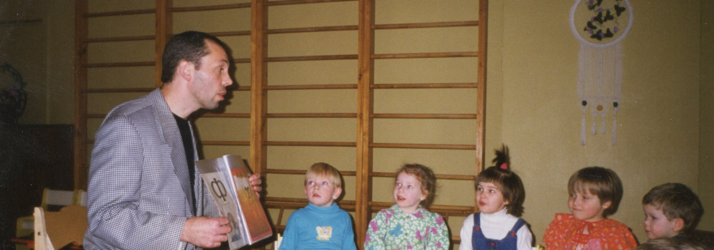

01
Опережающая база
Навык формируется мягко, до начала школьного стресса.
Метод ИВУ аккуратно встраивается в вашу текущую программу. Педагоги не перегружаются, а дети без стресса переходят от игровых занятий к уверенному чтению и готовности к школе.
Современные родители ждут от детского сада не просто присмотра, а качественной подготовки к первому классу. Но классические методы часто вызывают у детей отторжение и перегружают педагогов. Мы даём ДОУ инструмент, который решает эту задачу элегантно: чтение становится естественным результатом групповой игры.
Навык формируется мягко, до начала школьного стресса.
Учреждение показывает родителям чёткий и прозрачный результат.
Садик становится первой, самой важной ступенью в образовательной траектории ребёнка.
Вы получаете не разовую активность, а системную модель, которую можно показывать педагогам, родителям и администрации как понятную траекторию развития ребёнка.
Дополняем, а не отменяем вашу основную программу. Метод встраивается в текущий ритм группы.
Педагог получает рабочие форматы занятий, которые можно применять в реальной жизни группы.
Вы можете понятно объяснять маршрут ребёнка: от первых слов к чтению и школьной готовности.
Развитие показывается не абстрактно, а через этапы, материалы и наблюдаемые достижения.
Сначала ребёнок входит в чтение через цвет и разрезные слоги, затем переходит к кубикам, записи объёма и итоговой автоматизации навыка.
Лучший способ понять метод — увидеть его на ваших воспитанниках. Мы проведём открытое занятие и покажем, как один педагог легко удерживает внимание всей группы без окриков и дисциплинарных проблем.
Секрет фокуса: вращение кубика включает в работу оба полушария мозга. Зрение, моторика и речь работают синхронно, формируя устойчивый навык чтения.
Метод ИВУ — это не недавний стартап. За этой системой стоят десятилетия работы Сергея Белолипецкого в реальных группах детских садов, сотни обученных педагогов и тысячи уверенно читающих детей.




Первичное знакомство и демонстрационный урок для ДОУ — бесплатно. Системное внедрение программы, методическое сопровождение и доступ к полному комплекту материалов обсуждаются по заявке.
Первый показ метода в группе, чтобы увидеть формат занятия и реакцию детей.
Обсуждаем, как встроить программу в ритм учреждения без перегруза коллектива.
Подбираем формат работы для педагогов, руководителя и последующего запуска программы.
Полный комплект методических материалов и дальнейшая архитектура работы — по заявке.
Оставьте заявку, чтобы обсудить формат работы: от проведения первого бесплатного демо-урока до системного внедрения программы в вашем детском саду.